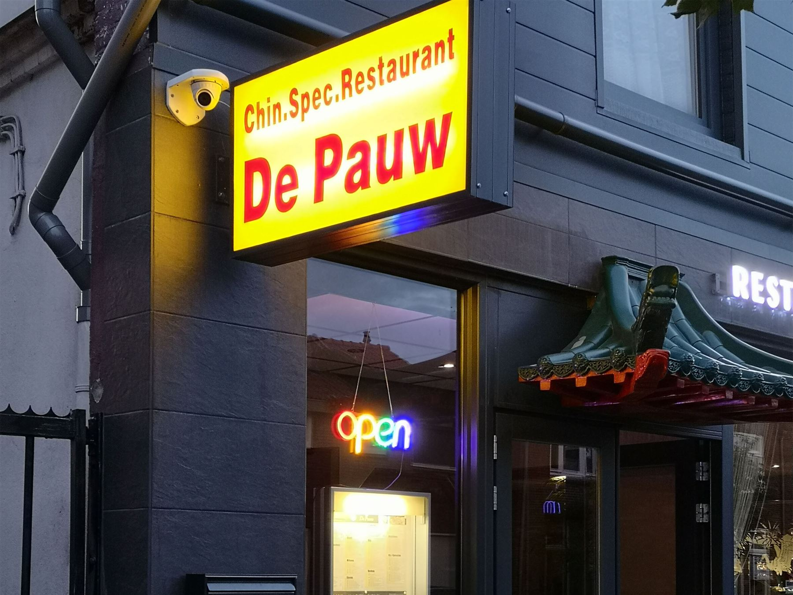
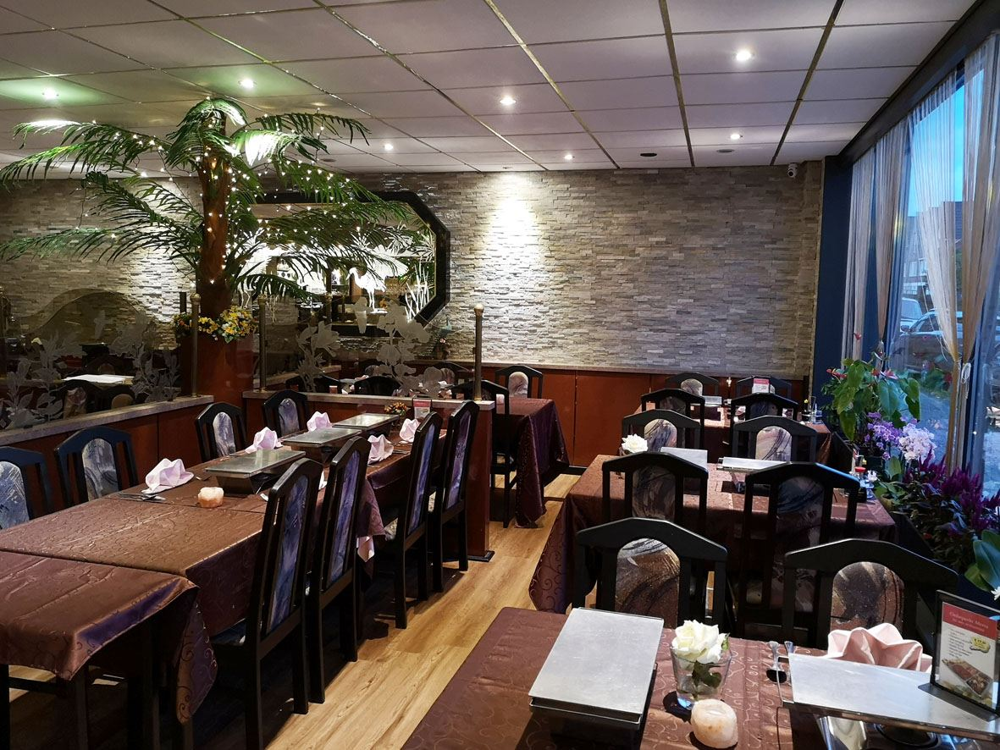
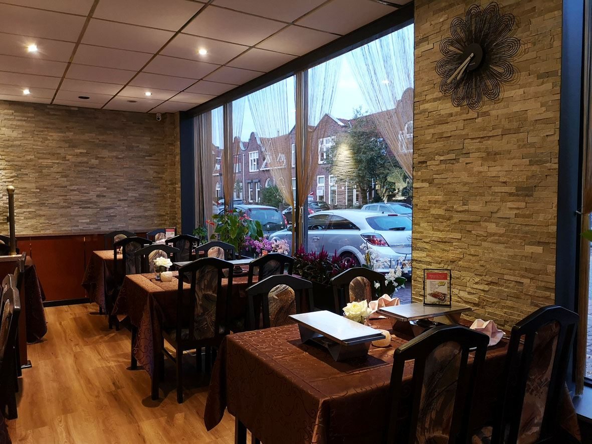
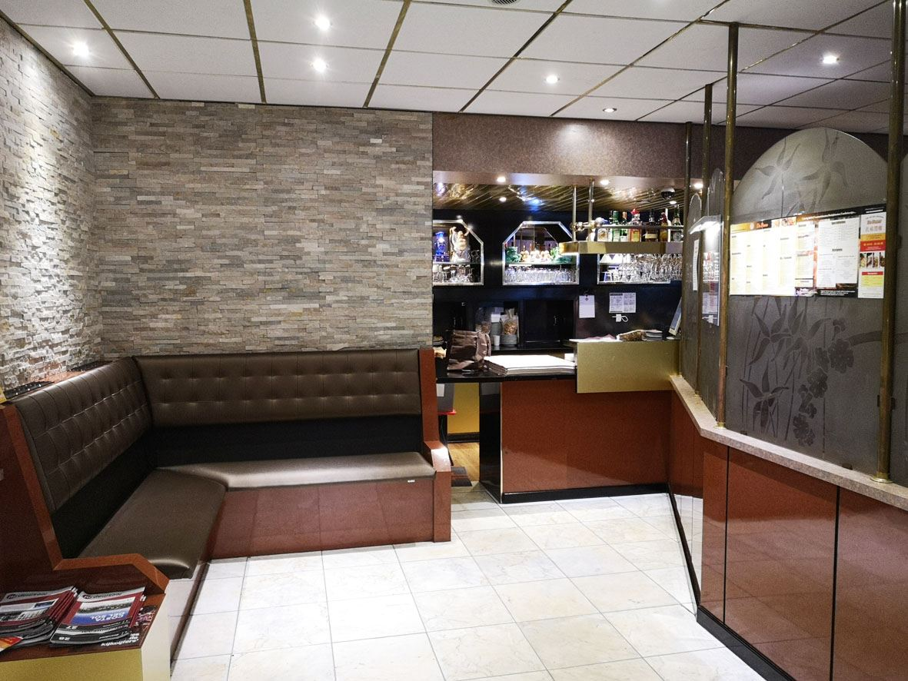
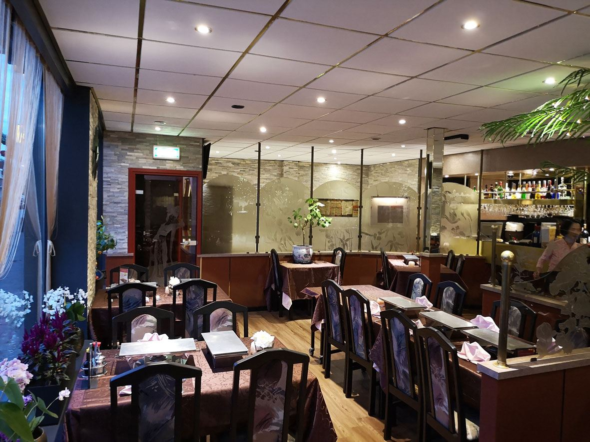

- Tomatensoep
- 2 saté's
- Babi pangang
- Foe yong hai
- Tjap tjoy
- Kroepoek
€ 25,50

Chinees-Indisch specialiteitenrestaurant in Waalwijk
Afhalen, aan tafel en catering. Bel uw bestelling even door, dat voorkomt lange wachttijden.
Donderdag t/m zaterdag 16:00 - 20:00, zondag en feestdagen 11:30 - 20:00
0416 - 33 50 45
Zo hoeft u niet lang te wachten.
St. Antoniusstraat 64 - 66
5144 AE Waalwijk
Meldt u het ons bij uw bestelling, dan houden we er rekening mee.
Vaste combinaties voor twee of vier personen, inclusief witte rijst. Liever nasi of bami erbij? Dat kan voor € 1,50, mihoen of Chinese mie voor € 4,50.
€ 25,50
€ 26,50
€ 28,50
€ 52,00
€ 55,00
€ 65,50
Prijslijst geldig vanaf januari 2026. Noem bij het bestellen gewoon het nummer. Bij de gerechten met witte rijst kunt u ook kiezen voor nasi of bami (€ 1,50) of mihoen of Chinese mie (€ 4,50).
Geen gerecht gevonden. Probeer een ander woord of nummer.
Alle prijzen zijn inclusief btw. Heeft u allergieën, meldt u het ons alstublieft. 149 gerechten op de kaart.
Achter de gevel aan de St. Antoniusstraat zit het restaurant van De Pauw: stenen wanden, gedekte tafels en een palm vol lichtjes. Bij de ingang is de afhaalbalie, met een bank om even op te wachten.
Garantie voor kwaliteit en service, zoals het op onze folder staat.
Bel ons: 0416 - 33 50 45



Catering buffet, communiefeesten, bedrijfsfeesten, familiefeestjes. Originele Chinese keukens, van receptie buffet tot complete maaltijden.
vanaf 30 personen
vanaf 30 personen
Vraag naar de prijs per persoon en geef ons alvast door:
| Maandag | gesloten |
|---|---|
| Dinsdag | gesloten |
| Woensdag | gesloten |
| Donderdag | 16:00 - 20:00 |
| Vrijdag | 16:00 - 20:00 |
| Zaterdag | 16:00 - 20:00 |
| Zondag | 11:30 - 20:00 |
| Feestdagen | 11:30 - 20:00 |
Op feestdagen zijn we ook op maandag, dinsdag en woensdag open.